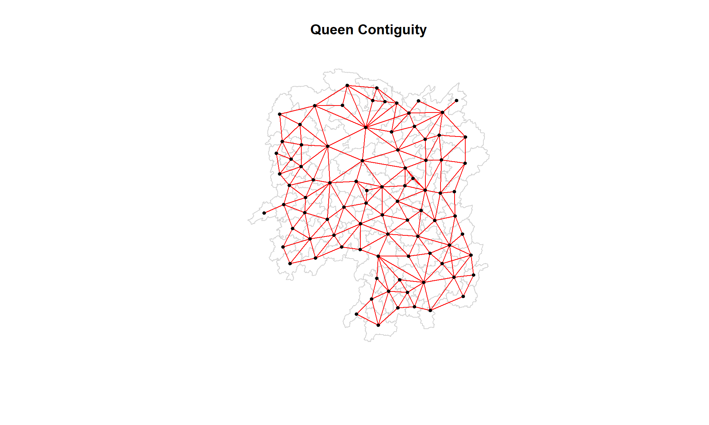
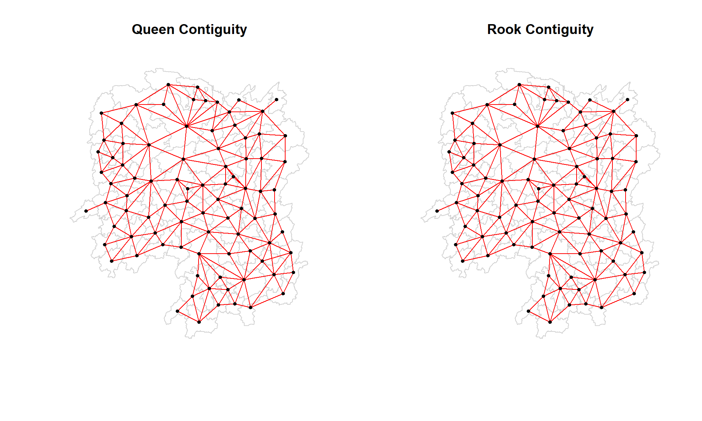
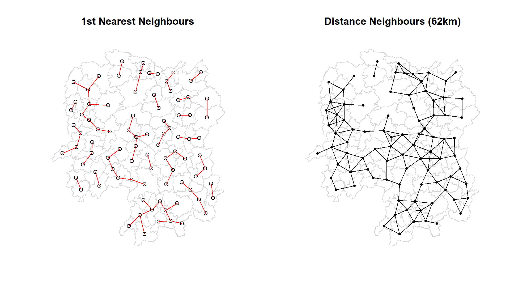
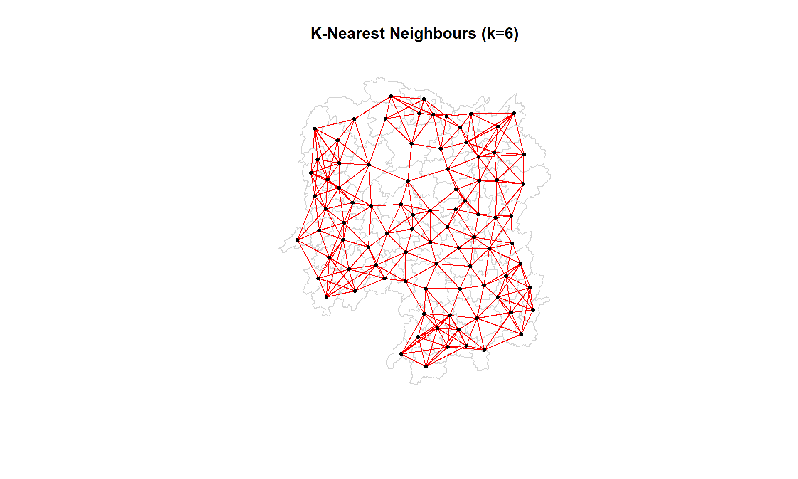
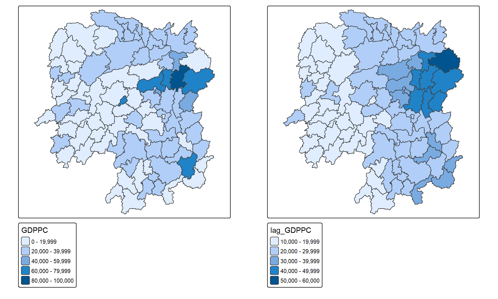
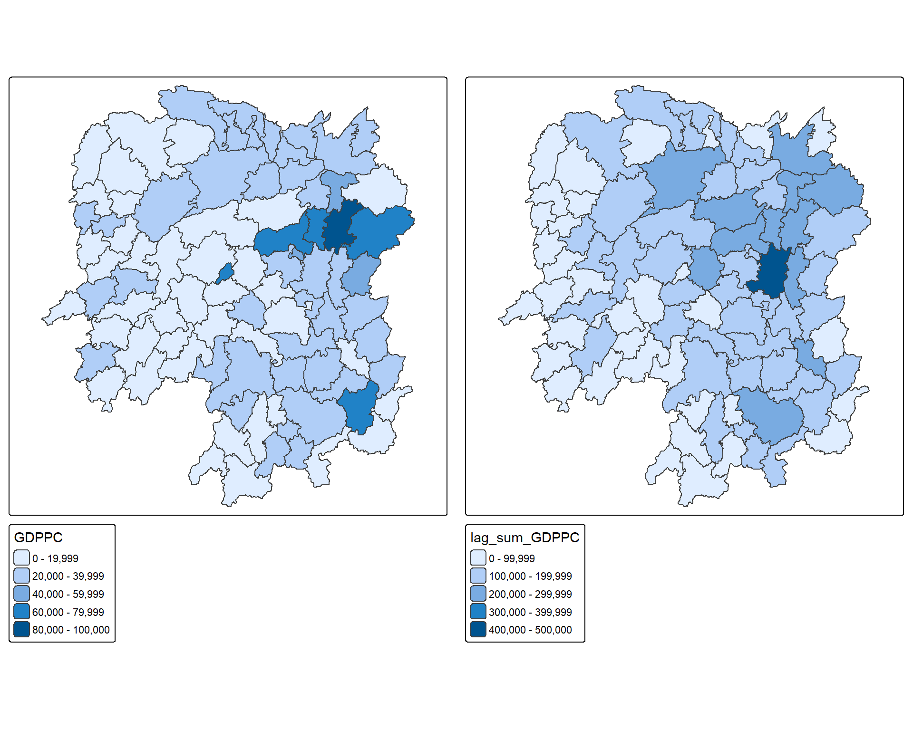
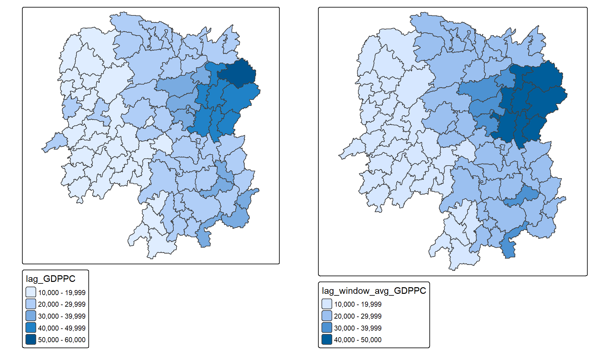
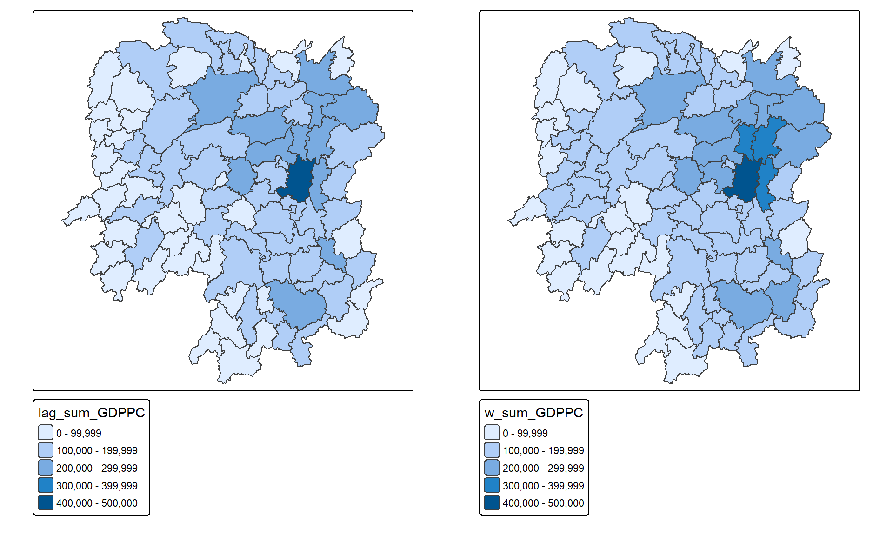

pacman::p_load(sf, spdep, tmap, tidyverse)Hands-on Exercise 04: Spatial Weights and Applications
1 Overview
In this hands-on exercise, you will learn how to compute spatial weights using R. By the end of this exercise, you will be able to:
- Import geospatial data using appropriate function(s) of sf package
- Import csv file using appropriate function of readr package
- Perform relational join using appropriate join function of dplyr package
- Compute spatial weights using appropriate functions of spdep package
- Calculate spatially lagged variables using appropriate functions of spdep package
2 The Study Area and Data
Two data sets will be used in this hands-on exercise:
- Hunan county boundary layer: This is a geospatial data set in ESRI shapefile format
- Hunan_2012.csv: This csv file contains selected Hunan’s local development indicators in 2012
3 Getting Started
3.1 Loading R Packages
Before we get started, we need to ensure that spdep, sf, tmap and tidyverse packages are installed and loaded.
4 Getting the Data Into R Environment
4.1 Import shapefile into R environment
The code chunk below uses st_read() of sf package to import Hunan shapefile into R. The imported shapefile will be a simple features object of sf.
Show code
hunan <- st_read(dsn = "data/geospatial",
layer = "Hunan")Reading layer `Hunan' from data source
`C:\Users\HOPE\Desktop\ISSS626\Hands-on_Ex\Hands-on_ex04\data\geospatial'
using driver `ESRI Shapefile'
Simple feature collection with 88 features and 7 fields
Geometry type: POLYGON
Dimension: XY
Bounding box: xmin: 108.7831 ymin: 24.6342 xmax: 114.2544 ymax: 30.12812
Geodetic CRS: WGS 844.2 Import csv file into R environment
Next, we will import Hunan_2012.csv into R using read_csv() of readr package. The output is an R dataframe class.
Show code
hunan2012 <- read_csv("data/aspatial/Hunan_2012.csv", show_col_types = FALSE)
# Check the data
glimpse(hunan2012)Rows: 88
Columns: 29
$ County <chr> "Anhua", "Anren", "Anxiang", "Baojing", "Chaling", "Changn…
$ City <chr> "Yiyang", "Chenzhou", "Changde", "Hunan West", "Zhuzhou", …
$ avg_wage <dbl> 30544, 28058, 31935, 30843, 31251, 28518, 54540, 28597, 33…
$ deposite <dbl> 10967.0, 4598.9, 5517.2, 2250.0, 8241.4, 10860.0, 24332.0,…
$ FAI <dbl> 6831.7, 6386.1, 3541.0, 1005.4, 6508.4, 7920.0, 33624.0, 1…
$ Gov_Rev <dbl> 456.72, 220.57, 243.64, 192.59, 620.19, 769.86, 5350.00, 1…
$ Gov_Exp <dbl> 2703.0, 1454.7, 1779.5, 1379.1, 1947.0, 2631.6, 7885.5, 11…
$ GDP <dbl> 13225.0, 4941.2, 12482.0, 4087.9, 11585.0, 19886.0, 88009.…
$ GDPPC <dbl> 14567, 12761, 23667, 14563, 20078, 24418, 88656, 10132, 17…
$ GIO <dbl> 9276.90, 4189.20, 5108.90, 3623.50, 9157.70, 37392.00, 513…
$ Loan <dbl> 3954.90, 2555.30, 2806.90, 1253.70, 4287.40, 4242.80, 4053…
$ NIPCR <dbl> 3528.3, 3271.8, 7693.7, 4191.3, 3887.7, 9528.0, 17070.0, 3…
$ Bed <dbl> 2718, 970, 1931, 927, 1449, 3605, 3310, 582, 2170, 2179, 1…
$ Emp <dbl> 494.310, 290.820, 336.390, 195.170, 330.290, 548.610, 670.…
$ EmpR <dbl> 441.4, 255.4, 270.5, 145.6, 299.0, 415.1, 452.0, 127.6, 21…
$ EmpRT <dbl> 338.0, 99.4, 205.9, 116.4, 154.0, 273.7, 219.4, 94.4, 174.…
$ Pri_Stu <dbl> 54.175, 33.171, 19.584, 19.249, 33.906, 81.831, 59.151, 18…
$ Sec_Stu <dbl> 32.830, 17.505, 17.819, 11.831, 20.548, 44.485, 39.685, 7.…
$ Household <dbl> 290.4, 104.6, 148.1, 73.2, 148.7, 211.2, 300.3, 76.1, 139.…
$ Household_R <dbl> 234.5, 121.9, 135.4, 69.9, 139.4, 211.7, 248.4, 59.6, 110.…
$ NOIP <dbl> 101, 34, 53, 18, 106, 115, 214, 17, 55, 70, 44, 84, 74, 17…
$ Pop_R <dbl> 670.3, 243.2, 346.0, 184.1, 301.6, 448.2, 475.1, 189.6, 31…
$ RSCG <dbl> 5760.60, 2386.40, 3957.90, 768.04, 4009.50, 5220.40, 22604…
$ Pop_T <dbl> 910.8, 388.7, 528.3, 281.3, 578.4, 816.3, 998.6, 256.7, 45…
$ Agri <dbl> 4942.253, 2357.764, 4524.410, 1118.561, 3793.550, 6430.782…
$ Service <dbl> 5414.5, 3814.1, 14100.0, 541.8, 5444.0, 13074.6, 17726.6, …
$ Disp_Inc <dbl> 12373, 16072, 16610, 13455, 20461, 20868, 183252, 12379, 1…
$ RORP <dbl> 0.7359464, 0.6256753, 0.6549309, 0.6544614, 0.5214385, 0.5…
$ ROREmp <dbl> 0.8929619, 0.8782065, 0.8041262, 0.7460163, 0.9052651, 0.7…4.3 Performing relational join
The code chunk below will be used to update the attribute table of hunan’s SpatialPolygonsDataFrame with the attribute fields of hunan2012 dataframe. This is performed using left_join() of dplyr package.
Show code
hunan <- left_join(hunan, hunan2012, by = c("County" = "County"))
# Check the result
glimpse(hunan)Rows: 88
Columns: 36
$ NAME_2 <chr> "Changde", "Changde", "Changde", "Changde", "Changde", "Ch…
$ ID_3 <int> 21098, 21100, 21101, 21102, 21103, 21104, 21109, 21110, 21…
$ NAME_3 <chr> "Anxiang", "Hanshou", "Jinshi", "Li", "Linli", "Shimen", "…
$ ENGTYPE_3 <chr> "County", "County", "County City", "County", "County", "Co…
$ Shape_Leng <dbl> 1.869074, 2.360691, 1.425620, 3.474325, 2.289506, 4.171918…
$ Shape_Area <dbl> 0.10056190, 0.19978745, 0.05302413, 0.18908121, 0.11450357…
$ County <chr> "Anxiang", "Hanshou", "Jinshi", "Li", "Linli", "Shimen", "…
$ City <chr> "Changde", "Changde", "Changde", "Changde", "Changde", "Ch…
$ avg_wage <dbl> 31935, 32265, 28692, 32541, 32667, 33261, 40446, 40744, 45…
$ deposite <dbl> 5517.2, 7979.0, 4581.7, 13487.0, 564.1, 8334.4, 21415.0, 1…
$ FAI <dbl> 3541.0, 8665.0, 4777.0, 16066.0, 7781.2, 10531.0, 43599.0,…
$ Gov_Rev <dbl> 243.64, 386.13, 373.31, 709.61, 336.86, 548.33, 2473.10, 2…
$ Gov_Exp <dbl> 1779.5, 2062.4, 1148.4, 2459.5, 1538.7, 2178.8, 4605.5, 48…
$ GDP <dbl> 12482.0, 15788.0, 8706.9, 20322.0, 10355.0, 16293.0, 81113…
$ GDPPC <dbl> 23667, 20981, 34592, 24473, 25554, 27137, 63118, 62202, 70…
$ GIO <dbl> 5108.9, 13491.0, 10935.0, 18402.0, 8214.0, 17795.0, 99254.…
$ Loan <dbl> 2806.90, 4550.00, 2242.00, 6748.00, 358.00, 6026.50, 23408…
$ NIPCR <dbl> 7693.7, 8269.9, 8169.9, 8377.0, 8143.1, 6156.0, 15719.0, 1…
$ Bed <dbl> 1931, 2560, 848, 2038, 1440, 2502, 6225, 4351, 1678, 970, …
$ Emp <dbl> 336.39, 456.78, 122.78, 513.44, 307.36, 392.05, 919.62, 85…
$ EmpR <dbl> 270.5, 388.8, 82.1, 426.8, 272.2, 329.6, 721.4, 757.6, 268…
$ EmpRT <dbl> 205.9, 246.7, 61.7, 227.1, 100.8, 193.8, 300.1, 318.3, 131…
$ Pri_Stu <dbl> 19.584, 42.097, 8.723, 38.975, 23.286, 29.245, 90.978, 80.…
$ Sec_Stu <dbl> 17.819, 33.029, 7.592, 33.938, 18.943, 26.104, 58.819, 68.…
$ Household <dbl> 148.1, 240.2, 81.9, 268.5, 129.1, 190.6, 374.8, 391.7, 161…
$ Household_R <dbl> 135.4, 208.7, 43.7, 256.0, 157.2, 184.7, 369.8, 369.6, 154…
$ NOIP <dbl> 53, 95, 77, 96, 99, 122, 733, 552, 314, 34, 14, 100, 67, 4…
$ Pop_R <dbl> 346.0, 553.2, 92.4, 539.7, 246.6, 399.2, 642.7, 655.5, 266…
$ RSCG <dbl> 3957.9, 4460.5, 3683.0, 7110.2, 3604.9, 6490.7, 16233.0, 1…
$ Pop_T <dbl> 528.3, 804.6, 251.8, 832.5, 409.3, 600.5, 1285.5, 1186.5, …
$ Agri <dbl> 4524.410, 6545.350, 2562.460, 7562.340, 3583.910, 5266.510…
$ Service <dbl> 14100.0, 17727.0, 7525.0, 53160.0, 7031.0, 6981.0, 26617.8…
$ Disp_Inc <dbl> 16610, 18925, 19498, 18985, 18604, 19275, 27345, 24020, 27…
$ RORP <dbl> 0.6549309, 0.6875466, 0.3669579, 0.6482883, 0.6024921, 0.6…
$ ROREmp <dbl> 0.8041262, 0.8511756, 0.6686757, 0.8312558, 0.8856065, 0.8…
$ geometry <POLYGON [°]> POLYGON ((112.0625 29.75523..., POLYGON ((112.2288…5 Visualising Regional Development Indicator
Now, we will prepare a basemap and a choropleth map showing the distribution of GDPPC 2012 using qtm() of tmap package.
Show code
basemap <- tm_shape(hunan) +
tm_polygons() +
tm_text("NAME_3", size = 0.5)
gdppc <- qtm(hunan, "GDPPC")
tmap_arrange(basemap, gdppc, asp = 1, ncol = 2)
6 Computing Contiguity Spatial Weights
In this section, you will learn how to use poly2nb() of spdep package to compute contiguity weight matrices for the study area.
6.1 Computing (QUEEN) contiguity based neighbours
The code chunk below is used to compute Queen contiguity weight matrix.
Show code
wm_q <- poly2nb(hunan, queen = TRUE)
summary(wm_q)Neighbour list object:
Number of regions: 88
Number of nonzero links: 448
Percentage nonzero weights: 5.785124
Average number of links: 5.090909
Link number distribution:
1 2 3 4 5 6 7 8 9 11
2 2 12 16 24 14 11 4 2 1
2 least connected regions:
30 65 with 1 link
1 most connected region:
85 with 11 linksThe summary report shows that: - There are 88 area units in Hunan - The most connected area unit has 11 neighbours - There are two area units with only one neighbour
6.1.1 Examining the neighbours
For each polygon in our polygon object, wm_q lists all neighboring polygons. For example, to see the neighbors for the first polygon:
Show code
# Check neighbours for polygon 1
wm_q[[1]][1] 2 3 4 57 85Show code
# Get the county name of Polygon ID=1
hunan$County[1][1] "Anxiang"Show code
# Get the county names of the five neighboring polygons
hunan$County[c(2,3,4,57,85)][1] "Hanshou" "Jinshi" "Li" "Nan" "Taoyuan"Show code
# Get the GDPPC of these five counties
nb1 <- wm_q[[1]]
nb1 <- hunan$GDPPC[nb1]
nb1[1] 20981 34592 24473 21311 228796.1.2 Display the complete weight matrix
You can display the complete weight matrix structure using str():
Show code
str(wm_q)6.2 Creating (ROOK) contiguity based neighbours
The code chunk below is used to compute Rook contiguity weight matrix.
Show code
wm_r <- poly2nb(hunan, queen = FALSE)
summary(wm_r)Neighbour list object:
Number of regions: 88
Number of nonzero links: 440
Percentage nonzero weights: 5.681818
Average number of links: 5
Link number distribution:
1 2 3 4 5 6 7 8 9 10
2 2 12 20 21 14 11 3 2 1
2 least connected regions:
30 65 with 1 link
1 most connected region:
85 with 10 linksThe summary report shows that: - The most connected area unit has 10 neighbours - There are two area units with only one neighbour
6.3 Visualising contiguity weights
A connectivity graph takes a point and displays a line to each neighboring point. We need to get points (polygon centroids) to make our connectivity graphs.
6.3.1 Getting Latitude and Longitude of Polygon Centroids
Show code
# Get longitude values
longitude <- map_dbl(hunan$geometry, ~st_centroid(.x)[[1]])
# Get latitude values
latitude <- map_dbl(hunan$geometry, ~st_centroid(.x)[[2]])
# Bind longitude and latitude into the same object
coords <- cbind(longitude, latitude)
# Check the first few observations
head(coords) longitude latitude
[1,] 112.1531 29.44362
[2,] 112.0372 28.86489
[3,] 111.8917 29.47107
[4,] 111.7031 29.74499
[5,] 111.6138 29.49258
[6,] 111.0341 29.798636.3.2 Plotting Queen contiguity based neighbours map
Show code
plot(hunan$geometry, border = "lightgrey")
plot(wm_q, coords, pch = 19, cex = 0.6, add = TRUE, col = "red")
title("Queen Contiguity")
6.3.3 Plotting Rook contiguity based neighbours map
Show code
plot(hunan$geometry, border = "lightgrey")
plot(wm_r, coords, pch = 19, cex = 0.6, add = TRUE, col = "red")
title("Rook Contiguity")
6.3.4 Plotting both Queen and Rook contiguity based neighbours maps
Show code
par(mfrow = c(1,2))
plot(hunan$geometry, border = "lightgrey", main = "Queen Contiguity")
plot(wm_q, coords, pch = 19, cex = 0.6, add = TRUE, col = "red")
plot(hunan$geometry, border = "lightgrey", main = "Rook Contiguity")
plot(wm_r, coords, pch = 19, cex = 0.6, add = TRUE, col = "red")
7 Computing Distance Based Neighbours
In this section, you will learn how to derive distance-based weight matrices using dnearneigh() of spdep package.
7.1 Determine the cut-off distance
First, we need to determine the upper limit for distance band:
Show code
# Step 1: Find k-nearest neighbours
k1 <- knn2nb(knearneigh(coords))
# Step 2: Calculate distances between neighbours
k1dists <- unlist(nbdists(k1, coords, longlat = TRUE))
# Step 3: Summary statistics
summary(k1dists) Min. 1st Qu. Median Mean 3rd Qu. Max.
24.79 32.57 38.01 39.07 44.52 61.79 The summary report shows that the largest first nearest neighbour distance is 61.79 km, so using this as the upper threshold gives certainty that all units will have at least one neighbour.
7.2 Computing fixed distance weight matrix
Now, we will compute the distance weight matrix using dnearneigh():
Show code
wm_d62 <- dnearneigh(coords, 0, 62, longlat = TRUE)
wm_d62Neighbour list object:
Number of regions: 88
Number of nonzero links: 324
Percentage nonzero weights: 4.183884
Average number of links: 3.681818 7.2.1 Display the structure of the weight matrix
Show code
str(wm_d62)We can also use table() and card() to check the neighbour distribution:
Show code
table(hunan$County, card(wm_d62))
1 2 3 4 5 6
Anhua 1 0 0 0 0 0
Anren 0 0 0 1 0 0
Anxiang 0 0 0 0 1 0
Baojing 0 0 0 0 1 0
Chaling 0 0 1 0 0 0
Changning 0 0 1 0 0 0
Changsha 0 0 0 1 0 0
Chengbu 0 1 0 0 0 0
Chenxi 0 0 0 1 0 0
Cili 0 1 0 0 0 0
Dao 0 0 0 1 0 0
Dongan 0 0 1 0 0 0
Dongkou 0 0 0 1 0 0
Fenghuang 0 0 0 1 0 0
Guidong 0 0 1 0 0 0
Guiyang 0 0 0 1 0 0
Guzhang 0 0 0 0 0 1
Hanshou 0 0 0 1 0 0
Hengdong 0 0 0 0 1 0
Hengnan 0 0 0 0 1 0
Hengshan 0 0 0 0 0 1
Hengyang 0 0 0 0 0 1
Hongjiang 0 0 0 0 1 0
Huarong 0 0 0 1 0 0
Huayuan 0 0 0 1 0 0
Huitong 0 0 0 1 0 0
Jiahe 0 0 0 0 1 0
Jianghua 0 0 1 0 0 0
Jiangyong 0 1 0 0 0 0
Jingzhou 0 1 0 0 0 0
Jinshi 0 0 0 1 0 0
Jishou 0 0 0 0 0 1
Lanshan 0 0 0 1 0 0
Leiyang 0 0 0 1 0 0
Lengshuijiang 0 0 1 0 0 0
Li 0 0 1 0 0 0
Lianyuan 0 0 0 0 1 0
Liling 0 1 0 0 0 0
Linli 0 0 0 1 0 0
Linwu 0 0 0 1 0 0
Linxiang 1 0 0 0 0 0
Liuyang 0 1 0 0 0 0
Longhui 0 0 1 0 0 0
Longshan 0 1 0 0 0 0
Luxi 0 0 0 0 1 0
Mayang 0 0 0 0 0 1
Miluo 0 0 0 0 1 0
Nan 0 0 0 0 1 0
Ningxiang 0 0 0 1 0 0
Ningyuan 0 0 0 0 1 0
Pingjiang 0 1 0 0 0 0
Qidong 0 0 1 0 0 0
Qiyang 0 0 1 0 0 0
Rucheng 0 1 0 0 0 0
Sangzhi 0 1 0 0 0 0
Shaodong 0 0 0 0 1 0
Shaoshan 0 0 0 0 1 0
Shaoyang 0 0 0 1 0 0
Shimen 1 0 0 0 0 0
Shuangfeng 0 0 0 0 0 1
Shuangpai 0 0 0 1 0 0
Suining 0 0 0 0 1 0
Taojiang 0 1 0 0 0 0
Taoyuan 0 1 0 0 0 0
Tongdao 0 1 0 0 0 0
Wangcheng 0 0 0 1 0 0
Wugang 0 0 1 0 0 0
Xiangtan 0 0 0 1 0 0
Xiangxiang 0 0 0 0 1 0
Xiangyin 0 0 0 1 0 0
Xinhua 0 0 0 0 1 0
Xinhuang 1 0 0 0 0 0
Xinning 0 1 0 0 0 0
Xinshao 0 0 0 0 0 1
Xintian 0 0 0 0 1 0
Xupu 0 1 0 0 0 0
Yanling 0 0 1 0 0 0
Yizhang 1 0 0 0 0 0
Yongshun 0 0 0 1 0 0
Yongxing 0 0 0 1 0 0
You 0 0 0 1 0 0
Yuanjiang 0 0 0 0 1 0
Yuanling 1 0 0 0 0 0
Yueyang 0 0 1 0 0 0
Zhijiang 0 0 0 0 1 0
Zhongfang 0 0 0 1 0 0
Zhuzhou 0 0 0 0 1 0
Zixing 0 0 1 0 0 07.2.2 Plotting fixed distance weight matrix
Show code
plot(hunan$geometry, border = "lightgrey")
plot(wm_d62, coords, add = TRUE)
plot(k1, coords, add = TRUE, col = "red", length = 0.08)
title("Fixed Distance Weights (62km)")
The red lines show the links of 1st nearest neighbours and the black lines show the links of neighbours within the cut-off distance of 62km.
7.2.3 Plotting with comparison
Show code
par(mfrow = c(1,2))
plot(hunan$geometry, border = "lightgrey", main = "1st Nearest Neighbours")
plot(k1, coords, add = TRUE, col = "red", length = 0.08)
plot(hunan$geometry, border = "lightgrey", main = "Distance Neighbours (62km)")
plot(wm_d62, coords, add = TRUE, pch = 19, cex = 0.6)
7.3 Computing adaptive distance weight matrix
One characteristic of fixed distance weight matrix is that more densely settled areas (usually urban) tend to have more neighbours while less densely settled areas (usually rural) tend to have fewer neighbours.
It is possible to control the numbers of neighbours directly using k-nearest neighbours:
Show code
knn6 <- knn2nb(knearneigh(coords, k = 6))
knn6Neighbour list object:
Number of regions: 88
Number of nonzero links: 528
Percentage nonzero weights: 6.818182
Average number of links: 6
Non-symmetric neighbours listNotice that each county now has exactly six neighbours, no more, no less!
7.3.1 Display the content of the matrix
Show code
str(knn6)7.3.2 Plotting distance based neighbours
Show code
plot(hunan$geometry, border = "lightgrey")
plot(knn6, coords, pch = 19, cex = 0.6, add = TRUE, col = "red")
title("K-Nearest Neighbours (k=6)")
8 Weights based on IDW
In this section, you will learn how to derive a spatial weight matrix based on Inverse Distance Weights (IDW).
First, we will compute the distances between areas using nbdists():
Show code
dist <- nbdists(wm_q, coords, longlat = TRUE)
ids <- lapply(dist, function(x) 1/(x))
ids[[1]]
[1] 0.01535405 0.03916350 0.01820896 0.02807922 0.01145113
[[2]]
[1] 0.01535405 0.01764308 0.01925924 0.02323898 0.01719350
[[3]]
[1] 0.03916350 0.02822040 0.03695795 0.01395765
[[4]]
[1] 0.01820896 0.02822040 0.03414741 0.01539065
[[5]]
[1] 0.03695795 0.03414741 0.01524598 0.01618354
[[6]]
[1] 0.015390649 0.015245977 0.021748129 0.011883901 0.009810297
[[7]]
[1] 0.01708612 0.01473997 0.01150924 0.01872915
[[8]]
[1] 0.02022144 0.03453056 0.02529256 0.01036340 0.02284457 0.01500600 0.01515314
[[9]]
[1] 0.02022144 0.01574888 0.02109502 0.01508028 0.02902705 0.01502980
[[10]]
[1] 0.02281552 0.01387777 0.01538326 0.01346650 0.02100510 0.02631658 0.01874863
[8] 0.01500046
[[11]]
[1] 0.01882869 0.02243492 0.02247473
[[12]]
[1] 0.02779227 0.02419652 0.02333385 0.02986130 0.02335429
[[13]]
[1] 0.02779227 0.02650020 0.02670323 0.01714243
[[14]]
[1] 0.01882869 0.01233868 0.02098555
[[15]]
[1] 0.02650020 0.01233868 0.01096284 0.01562226
[[16]]
[1] 0.02281552 0.02466962 0.02765018 0.01476814 0.01671430
[[17]]
[1] 0.01387777 0.02243492 0.02098555 0.01096284 0.02466962 0.01593341 0.01437996
[[18]]
[1] 0.02039779 0.02032767 0.01481665 0.01473691 0.01459380
[[19]]
[1] 0.01538326 0.01926323 0.02668415 0.02140253 0.01613589 0.01412874
[[20]]
[1] 0.01346650 0.02039779 0.01926323 0.01723025 0.02153130 0.01469240 0.02327034
[[21]]
[1] 0.02668415 0.01723025 0.01766299 0.02644986 0.02163800
[[22]]
[1] 0.02100510 0.02765018 0.02032767 0.02153130 0.01489296
[[23]]
[1] 0.01481665 0.01469240 0.01401432 0.02246233 0.01880425 0.01530458 0.01849605
[[24]]
[1] 0.02354598 0.01837201 0.02607264 0.01220154 0.02514180
[[25]]
[1] 0.02354598 0.02188032 0.01577283 0.01949232 0.02947957
[[26]]
[1] 0.02155798 0.01745522 0.02212108 0.02220532
[[27]]
[1] 0.02155798 0.02490625 0.01562326
[[28]]
[1] 0.01837201 0.02188032 0.02229549 0.03076171 0.02039506
[[29]]
[1] 0.02490625 0.01686587 0.01395022
[[30]]
[1] 0.02090587
[[31]]
[1] 0.02607264 0.01577283 0.01219005 0.01724850 0.01229012 0.01609781 0.01139438
[8] 0.01150130
[[32]]
[1] 0.01220154 0.01219005 0.01712515 0.01340413 0.01280928 0.01198216 0.01053374
[8] 0.01065655
[[33]]
[1] 0.01949232 0.01745522 0.02229549 0.02090587 0.01979045
[[34]]
[1] 0.03113041 0.03589551 0.02882915
[[35]]
[1] 0.01766299 0.02185795 0.02616766 0.02111721 0.02108253 0.01509020
[[36]]
[1] 0.01724850 0.03113041 0.01571707 0.01860991 0.02073549 0.01680129
[[37]]
[1] 0.01686587 0.02234793 0.01510990 0.01550676
[[38]]
[1] 0.01401432 0.02407426 0.02276151 0.01719415
[[39]]
[1] 0.01229012 0.02172543 0.01711924 0.02629732 0.01896385
[[40]]
[1] 0.01609781 0.01571707 0.02172543 0.01506473 0.01987922 0.01894207
[[41]]
[1] 0.02246233 0.02185795 0.02205991 0.01912542 0.01601083 0.01742892
[[42]]
[1] 0.02212108 0.01562326 0.01395022 0.02234793 0.01711924 0.01836831 0.01683518
[[43]]
[1] 0.01510990 0.02629732 0.01506473 0.01836831 0.03112027 0.01530782
[[44]]
[1] 0.01550676 0.02407426 0.03112027 0.01486508
[[45]]
[1] 0.03589551 0.01860991 0.01987922 0.02205991 0.02107101 0.01982700
[[46]]
[1] 0.03453056 0.04033752 0.02689769
[[47]]
[1] 0.02529256 0.02616766 0.04033752 0.01949145 0.02181458
[[48]]
[1] 0.02313819 0.03370576 0.02289485 0.01630057 0.01818085
[[49]]
[1] 0.03076171 0.02138091 0.02394529 0.01990000
[[50]]
[1] 0.01712515 0.02313819 0.02551427 0.02051530 0.02187179
[[51]]
[1] 0.03370576 0.02138091 0.02873854
[[52]]
[1] 0.02289485 0.02394529 0.02551427 0.02873854 0.03516672
[[53]]
[1] 0.01630057 0.01979945 0.01253977
[[54]]
[1] 0.02514180 0.02039506 0.01340413 0.01990000 0.02051530 0.03516672
[[55]]
[1] 0.01280928 0.01818085 0.02187179 0.01979945 0.01882298
[[56]]
[1] 0.01036340 0.01139438 0.01198216 0.02073549 0.01214479 0.01362855 0.01341697
[[57]]
[1] 0.028079221 0.017643082 0.031423501 0.029114131 0.013520292 0.009903702
[[58]]
[1] 0.01925924 0.03142350 0.02722997 0.01434859 0.01567192
[[59]]
[1] 0.01696711 0.01265572 0.01667105 0.01785036
[[60]]
[1] 0.02419652 0.02670323 0.01696711 0.02343040
[[61]]
[1] 0.02333385 0.01265572 0.02343040 0.02514093 0.02790764 0.01219751 0.02362452
[[62]]
[1] 0.02514093 0.02002219 0.02110260
[[63]]
[1] 0.02986130 0.02790764 0.01407043 0.01805987
[[64]]
[1] 0.02911413 0.01689892
[[65]]
[1] 0.02471705
[[66]]
[1] 0.01574888 0.01726461 0.03068853 0.01954805 0.01810569
[[67]]
[1] 0.01708612 0.01726461 0.01349843 0.01361172
[[68]]
[1] 0.02109502 0.02722997 0.03068853 0.01406357 0.01546511
[[69]]
[1] 0.02174813 0.01645838 0.01419926
[[70]]
[1] 0.02631658 0.01963168 0.02278487
[[71]]
[1] 0.01473997 0.01838483 0.03197403
[[72]]
[1] 0.01874863 0.02247473 0.01476814 0.01593341 0.01963168
[[73]]
[1] 0.01500046 0.02140253 0.02278487 0.01838483 0.01652709
[[74]]
[1] 0.01150924 0.01613589 0.03197403 0.01652709 0.01342099 0.02864567
[[75]]
[1] 0.011883901 0.010533736 0.012539774 0.018822977 0.016458383 0.008217581
[[76]]
[1] 0.01352029 0.01434859 0.01689892 0.02471705 0.01954805 0.01349843 0.01406357
[[77]]
[1] 0.014736909 0.018804247 0.022761507 0.012197506 0.020022195 0.014070428
[7] 0.008440896
[[78]]
[1] 0.02323898 0.02284457 0.01508028 0.01214479 0.01567192 0.01546511 0.01140779
[[79]]
[1] 0.01530458 0.01719415 0.01894207 0.01912542 0.01530782 0.01486508 0.02107101
[[80]]
[1] 0.01500600 0.02882915 0.02111721 0.01680129 0.01601083 0.01982700 0.01949145
[8] 0.01362855
[[81]]
[1] 0.02947957 0.02220532 0.01150130 0.01979045 0.01896385 0.01683518
[[82]]
[1] 0.02327034 0.02644986 0.01849605 0.02108253 0.01742892
[[83]]
[1] 0.023354289 0.017142433 0.015622258 0.016714303 0.014379961 0.014593799
[7] 0.014892965 0.018059871 0.008440896
[[84]]
[1] 0.01872915 0.02902705 0.01810569 0.01361172 0.01342099 0.01297994
[[85]]
[1] 0.011451133 0.017193502 0.013957649 0.016183544 0.009810297 0.010656545
[7] 0.013416965 0.009903702 0.014199260 0.008217581 0.011407794
[[86]]
[1] 0.01515314 0.01502980 0.01412874 0.02163800 0.01509020 0.02689769 0.02181458
[8] 0.02864567 0.01297994
[[87]]
[1] 0.01667105 0.02362452 0.02110260 0.02058034
[[88]]
[1] 0.01785036 0.020580349 Row-standardised Weights Matrix
Next, we need to assign weights to each neighboring polygon. In our case, each neighboring polygon will be assigned equal weight (style=“W”).
Show code
rswm_q <- nb2listw(wm_q, style = "W", zero.policy = TRUE)
rswm_qCharacteristics of weights list object:
Neighbour list object:
Number of regions: 88
Number of nonzero links: 448
Percentage nonzero weights: 5.785124
Average number of links: 5.090909
Weights style: W
Weights constants summary:
n nn S0 S1 S2
W 88 7744 88 37.86334 365.9147To see the weight of the first polygon’s neighbours:
Show code
rswm_q$weights[1][[1]]
[1] 0.2 0.2 0.2 0.2 0.2Each neighbor is assigned a weight of 0.2 (1/5) of the total weight. This means that when R computes the average neighboring income values, each neighbor’s income will be multiplied by 0.2 before being tallied.
We can also derive a row standardised distance weight matrix:
Show code
rswm_ids <- nb2listw(wm_q, glist = ids, style = "B", zero.policy = TRUE)
rswm_idsCharacteristics of weights list object:
Neighbour list object:
Number of regions: 88
Number of nonzero links: 448
Percentage nonzero weights: 5.785124
Average number of links: 5.090909
Weights style: B
Weights constants summary:
n nn S0 S1 S2
B 88 7744 8.786867 0.3776535 3.813710 Application of Spatial Weight Matrix
In this section, you will learn how to create four different spatial lagged variables:
- Spatial lag with row-standardized weights
- Spatial lag as a sum of neighbouring values
- Spatial window average
- Spatial window sum
10.1 Spatial lag with row-standardized weights
We’ll compute the average neighbor GDPPC value for each polygon. These values are often referred to as spatially lagged values.
Show code
GDPPC.lag <- lag.listw(rswm_q, hunan$GDPPC)
GDPPC.lag [1] 24847.20 22724.80 24143.25 27737.50 27270.25 21248.80 43747.00 33582.71
[9] 45651.17 32027.62 32671.00 20810.00 25711.50 30672.33 33457.75 31689.20
[17] 20269.00 23901.60 25126.17 21903.43 22718.60 25918.80 20307.00 20023.80
[25] 16576.80 18667.00 14394.67 19848.80 15516.33 20518.00 17572.00 15200.12
[33] 18413.80 14419.33 24094.50 22019.83 12923.50 14756.00 13869.80 12296.67
[41] 15775.17 14382.86 11566.33 13199.50 23412.00 39541.00 36186.60 16559.60
[49] 20772.50 19471.20 19827.33 15466.80 12925.67 18577.17 14943.00 24913.00
[57] 25093.00 24428.80 17003.00 21143.75 20435.00 17131.33 24569.75 23835.50
[65] 26360.00 47383.40 55157.75 37058.00 21546.67 23348.67 42323.67 28938.60
[73] 25880.80 47345.67 18711.33 29087.29 20748.29 35933.71 15439.71 29787.50
[81] 18145.00 21617.00 29203.89 41363.67 22259.09 44939.56 16902.00 16930.0010.1.1 Understanding spatial lag
Recall that we retrieved the GDPPC of the five neighbours of polygon 1:
Show code
nb1 <- wm_q[[1]]
nb1 <- hunan$GDPPC[nb1]
nb1[1] 20981 34592 24473 21311 22879Show code
# The average GDPPC of the neighbours
mean(nb1)[1] 24847.2Show code
# Compare with the lag value
GDPPC.lag[1][1] 24847.2We can append the spatially lag GDPPC values onto hunan sf data frame:
Show code
hunan <- hunan %>%
mutate(lag_GDPPC = GDPPC.lag)
# Check the result
head(hunan[c("County", "GDPPC", "lag_GDPPC")], 10)Simple feature collection with 10 features and 3 fields
Geometry type: POLYGON
Dimension: XY
Bounding box: xmin: 110.4922 ymin: 26.28322 xmax: 114.2544 ymax: 30.12812
Geodetic CRS: WGS 84
County GDPPC lag_GDPPC geometry
1 Anxiang 23667 24847.20 POLYGON ((112.0625 29.75523...
2 Hanshou 20981 22724.80 POLYGON ((112.2288 29.11684...
3 Jinshi 34592 24143.25 POLYGON ((111.8927 29.6013,...
4 Li 24473 27737.50 POLYGON ((111.3731 29.94649...
5 Linli 25554 27270.25 POLYGON ((111.6324 29.76288...
6 Shimen 27137 21248.80 POLYGON ((110.8825 30.11675...
7 Liuyang 63118 43747.00 POLYGON ((113.9905 28.5682,...
8 Ningxiang 62202 33582.71 POLYGON ((112.7181 28.38299...
9 Wangcheng 70666 45651.17 POLYGON ((112.7914 28.52688...
10 Anren 12761 32027.62 POLYGON ((113.1757 26.82734...10.1.2 Plotting GDPPC and spatial lag GDPPC
Show code
gdppc <- qtm(hunan, "GDPPC")
lag_gdppc <- qtm(hunan, "lag_GDPPC")
tmap_arrange(gdppc, lag_gdppc, asp = 1, ncol = 2)
10.2 Spatial lag as a sum of neighboring values
We can calculate spatial lag as a sum of neighboring values by assigning binary weights:
Show code
# Apply a function that assigns value of 1 per neighbour
b_weights <- lapply(wm_q, function(x) 0*x + 1)
# Assign binary weights
b_weights2 <- nb2listw(wm_q,
glist = b_weights,
style = "B")
b_weights2Characteristics of weights list object:
Neighbour list object:
Number of regions: 88
Number of nonzero links: 448
Percentage nonzero weights: 5.785124
Average number of links: 5.090909
Weights style: B
Weights constants summary:
n nn S0 S1 S2
B 88 7744 448 896 10224With the proper weights assigned, we can compute a lag variable:
Show code
lag_sum <- lag.listw(b_weights2, hunan$GDPPC)
lag_sum [1] 124236 113624 96573 110950 109081 106244 174988 235079 273907 256221
[11] 98013 104050 102846 92017 133831 158446 141883 119508 150757 153324
[21] 113593 129594 142149 100119 82884 74668 43184 99244 46549 20518
[31] 140576 121601 92069 43258 144567 132119 51694 59024 69349 73780
[41] 94651 100680 69398 52798 140472 118623 180933 82798 83090 97356
[51] 59482 77334 38777 111463 74715 174391 150558 122144 68012 84575
[61] 143045 51394 98279 47671 26360 236917 220631 185290 64640 70046
[71] 126971 144693 129404 284074 112268 203611 145238 251536 108078 238300
[81] 108870 108085 262835 248182 244850 404456 67608 3386010.2.1 Understanding the result
Show code
# Check the result for polygon 1
nb1 <- wm_q[[1]]
nb1_GDPPC <- hunan$GDPPC[nb1]
# Sum of neighbours' GDPPC
sum(nb1_GDPPC)[1] 124236Show code
# Compare with lag_sum
lag_sum[1][1] 124236Append the lag_sum GDPPC field into hunan:
Show code
hunan <- hunan %>%
mutate(lag_sum_GDPPC = lag_sum)
# Plot for comparison
gdppc <- qtm(hunan, "GDPPC")
lag_sum_gdppc <- qtm(hunan, "lag_sum_GDPPC")
tmap_arrange(gdppc, lag_sum_gdppc, asp = 1, ncol = 2)
10.3 Spatial window average
The spatial window average uses row-standardized weights and includes the diagonal element (the region itself).
Show code
# Add diagonal element
wm_q1 <- include.self(wm_q)
wm_q1Neighbour list object:
Number of regions: 88
Number of nonzero links: 536
Percentage nonzero weights: 6.921488
Average number of links: 6.090909 Show code
# Check the neighbour list of area 1
wm_q1[[1]][1] 1 2 3 4 57 85Notice that now area 1 has six neighbours instead of five (including itself).
Now we obtain weights:
Show code
wm_q1 <- nb2listw(wm_q1)
wm_q1Characteristics of weights list object:
Neighbour list object:
Number of regions: 88
Number of nonzero links: 536
Percentage nonzero weights: 6.921488
Average number of links: 6.090909
Weights style: W
Weights constants summary:
n nn S0 S1 S2
W 88 7744 88 30.90265 357.5308Create the lag variable from our weight structure and GDPPC variable:
Show code
lag_w_avg_gpdpc <- lag.listw(wm_q1, hunan$GDPPC)
lag_w_avg_gpdpc [1] 24650.50 22434.17 26233.00 27084.60 26927.00 22230.17 47621.20 37160.12
[9] 49224.71 29886.89 26627.50 22690.17 25366.40 25825.75 30329.00 32682.83
[17] 25948.62 23987.67 25463.14 21904.38 23127.50 25949.83 20018.75 19524.17
[25] 18955.00 17800.40 15883.00 18831.33 14832.50 17965.00 17159.89 16199.44
[33] 18764.50 26878.75 23188.86 20788.14 12365.20 15985.00 13764.83 11907.43
[41] 17128.14 14593.62 11644.29 12706.00 21712.29 43548.25 35049.00 16226.83
[49] 19294.40 18156.00 19954.75 18145.17 12132.75 18419.29 14050.83 23619.75
[57] 24552.71 24733.67 16762.60 20932.60 19467.75 18334.00 22541.00 26028.00
[65] 29128.50 46569.00 47576.60 36545.50 20838.50 22531.00 42115.50 27619.00
[73] 27611.33 44523.29 18127.43 28746.38 20734.50 33880.62 14716.38 28516.22
[81] 18086.14 21244.50 29568.80 48119.71 22310.75 43151.60 17133.40 17009.33Convert to data frame and append to hunan:
Show code
hunan <- hunan %>%
mutate(lag_window_avg_GDPPC = lag_w_avg_gpdpc)
# Create comparison table
hunan %>%
select(County, GDPPC, lag_GDPPC, lag_window_avg_GDPPC) %>%
head(10) %>%
knitr::kable()| County | GDPPC | lag_GDPPC | lag_window_avg_GDPPC | geometry |
|---|---|---|---|---|
| Anxiang | 23667 | 24847.20 | 24650.50 | POLYGON ((112.0625 29.75523… |
| Hanshou | 20981 | 22724.80 | 22434.17 | POLYGON ((112.2288 29.11684… |
| Jinshi | 34592 | 24143.25 | 26233.00 | POLYGON ((111.8927 29.6013,… |
| Li | 24473 | 27737.50 | 27084.60 | POLYGON ((111.3731 29.94649… |
| Linli | 25554 | 27270.25 | 26927.00 | POLYGON ((111.6324 29.76288… |
| Shimen | 27137 | 21248.80 | 22230.17 | POLYGON ((110.8825 30.11675… |
| Liuyang | 63118 | 43747.00 | 47621.20 | POLYGON ((113.9905 28.5682,… |
| Ningxiang | 62202 | 33582.71 | 37160.12 | POLYGON ((112.7181 28.38299… |
| Wangcheng | 70666 | 45651.17 | 49224.71 | POLYGON ((112.7914 28.52688… |
| Anren | 12761 | 32027.62 | 29886.89 | POLYGON ((113.1757 26.82734… |
10.3.1 Plot comparison
Show code
lag_gdppc <- qtm(hunan, "lag_GDPPC")
w_avg_gdppc <- qtm(hunan, "lag_window_avg_GDPPC")
tmap_arrange(lag_gdppc, w_avg_gdppc, asp = 1, ncol = 2)
10.4 Spatial window sum
The spatial window sum is the counterpart of the window average, but without using row-standardized weights.
Show code
# Add diagonal element
wm_q2 <- include.self(wm_q)
# Assign binary weights
b_weights3 <- lapply(wm_q2, function(x) 0*x + 1)
wm_q2 <- nb2listw(wm_q2,
glist = b_weights3,
style = "B")
wm_q2Characteristics of weights list object:
Neighbour list object:
Number of regions: 88
Number of nonzero links: 536
Percentage nonzero weights: 6.921488
Average number of links: 6.090909
Weights style: B
Weights constants summary:
n nn S0 S1 S2
B 88 7744 536 1072 14160Compute the lag variable:
Show code
w_sum_gdppc <- lag.listw(wm_q2, hunan$GDPPC)
w_sum_gdppc [1] 147903 134605 131165 135423 134635 133381 238106 297281 344573 268982
[11] 106510 136141 126832 103303 151645 196097 207589 143926 178242 175235
[21] 138765 155699 160150 117145 113730 89002 63532 112988 59330 35930
[31] 154439 145795 112587 107515 162322 145517 61826 79925 82589 83352
[41] 119897 116749 81510 63530 151986 174193 210294 97361 96472 108936
[51] 79819 108871 48531 128935 84305 188958 171869 148402 83813 104663
[61] 155742 73336 112705 78084 58257 279414 237883 219273 83354 90124
[71] 168462 165714 165668 311663 126892 229971 165876 271045 117731 256646
[81] 126603 127467 295688 336838 267729 431516 85667 51028Convert to data frame and append:
Show code
hunan <- hunan %>%
mutate(w_sum_GDPPC = w_sum_gdppc)
# Create comparison table
hunan %>%
select(County, lag_sum_GDPPC, w_sum_GDPPC) %>%
head(10) %>%
knitr::kable()| County | lag_sum_GDPPC | w_sum_GDPPC | geometry |
|---|---|---|---|
| Anxiang | 124236 | 147903 | POLYGON ((112.0625 29.75523… |
| Hanshou | 113624 | 134605 | POLYGON ((112.2288 29.11684… |
| Jinshi | 96573 | 131165 | POLYGON ((111.8927 29.6013,… |
| Li | 110950 | 135423 | POLYGON ((111.3731 29.94649… |
| Linli | 109081 | 134635 | POLYGON ((111.6324 29.76288… |
| Shimen | 106244 | 133381 | POLYGON ((110.8825 30.11675… |
| Liuyang | 174988 | 238106 | POLYGON ((113.9905 28.5682,… |
| Ningxiang | 235079 | 297281 | POLYGON ((112.7181 28.38299… |
| Wangcheng | 273907 | 344573 | POLYGON ((112.7914 28.52688… |
| Anren | 256221 | 268982 | POLYGON ((113.1757 26.82734… |
10.4.1 Plot comparison
Show code
lag_sum_gdppc <- qtm(hunan, "lag_sum_GDPPC")
w_sum_gdppc <- qtm(hunan, "w_sum_GDPPC")
tmap_arrange(lag_sum_gdppc, w_sum_gdppc, asp = 1, ncol = 2)
11 Summary
In this hands-on exercise, we have learned to:
- Import and join geospatial and attribute data
- Compute different types of spatial weights:
- Contiguity-based (Queen and Rook)
- Distance-based (Fixed and Adaptive)
- Inverse Distance Weighted
- Create row-standardised weight matrices
- Calculate four types of spatial lagged variables:
- Spatial lag with row-standardized weights (average of neighbours)
- Spatial lag as sum of neighbouring values
- Spatial window average (including the location itself)
- Spatial window sum (sum including the location itself)
- Visualize spatial weights and their applications
These techniques form the foundation for spatial autocorrelation analysis and spatial regression modeling, which are essential tools in spatial data analysis.